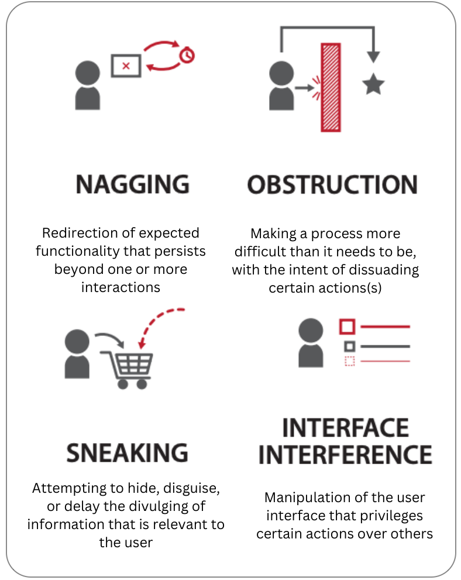

Questions addresses in this research
Is binge-watching behavior a result of human guilty pleasures, or is it also infleunced by external factors?
Could UI elements like Autoplay and Recommendations meant to provide viewing convenience, instead become uncontrollable and enforce mindless watching?
Findings
Rather than deciding to stop watching, users keep video watching compulsively at various times, specifically when viewing for entertainment purposes.
We find that certain UI elements on video streaming platforms are problematic that indirectly force us to watch more.
These elements reduce user autonomy and sense of self control when video watching in long durations.
TL;DR

- Dark Patterns --- Dark patterns are deceptive UI elements that trick users into doing something that they didn't intend. Examples of a general category of dark patterns can be seen on the right (Gray et al. [1]). Previous studies have pointed various categories of UI dark patterns in a range of user engagement areas like social media viewing, shopping, gaming etc.
- In this study, we investigate dark patterns on famous video streaming platforms in India --- Youtube, Netflix, Disney+ Hotstar and PrimeVideo.
- We conduct a diary study analysis with 22 participants over a period of 20 days to find user moods and feeling while they watch videos.
- We then conduct follow-up interviews to reveal explanations behind user viewing trends
- We then individually analyze the 4 video streaming platforms and reveal dark pattern categories in them.
- We finally highlight 4 UI elements that designers should consider implementing for sustainable and longer user retention rates.
What we did
Categories of dark pattern highlighted through our study

My responsibilities
- I was responsible for designing and conducting the user studies with assistance of my team members.
- I was responsible for reading prior literature on digital addiction and behavioral psychology.
- The 3 researchers in the team analyzed the diary study and interview data together.
- Based on literature review and user data analysis, I was responsible for coming up with the 5 dark pattern terms --- Feature Fog, Extreme Countdown, Switchoff Delay, Attention Quicksand and Bias Grind.
Team members
I worked on this project with wonderful team members who were also very good friends.
- Kyzyl Monteiro was responsible for co-designing the diary study and coming up with novel ideas to represent user trends graphically.
- Jaivrat Saroha was responsible for providing assistance on literature review of the work and helping in diary study data analysis.
- Dr. Angus Forbes and Dr. Aman Parnami were advisors in the study.
- 5. Interviews
- We define a video watching session as the entire length of video watching duration in which the user finished their viewing with a maximum break of 10 minutes in between.
- We observed user behaviors at two stages in the viewing session--- video selection (interaction) phase and the video completion phase.
- There's a 24.8% increase in mindless viewing from start to end of an session when users use Autoplay, as compared to 3.5% increase in mindless viewing due to Recommendations.
- The interviews also revealed that most users at the start of the session were not sure of which Recommended video to select.
- There's a 34.02% increae is user regret from start to end of a viewing session when users overwatch due to Recommendations, as opposed to 12.8% increase in user regret due to Autoplay.
- The goal of this categorization process was to reveal certain situations of use and their consequent effect on a user’s state of mind.
- For example, one category was ‘extreme countdown’ which not only represented the timer in an Autoplay functionality, but also the pressure situation induced by it for the users to make a decision.
- Similarly, "attention quicksand" not only pointed at the autoplay functionality of video trailers and GIFs on mouse hover, but also the tendency of mind to easily get distracted by them.
Study Stages
Click on any of the study stages to jump on the part for details.
↓
↓
↓
↓
Exploratory Survey
Motivation - Understand the reasons behind the rampant increase in video watching in recent times.
Constraints - Question (What are the motivations and values of unversity students?), Hypothesis (Whether streaming platform UI promotes binge watching or not?)
Informed by - Important variables observed through literature review --- User feelings and moods, state of mind, ease of content availability, social factors (alone or with family/friends), purpose of video watching, power of content (story structure), planned/unplanned behavior.
Process - Pearson correlation analyis on 180 universtiy students.
Why correlation analysis?We wanted to understand the behavioral characteristics of the demographic of university students. For that purpose, we needed quantitative understanding behind the behavior of university students in their video watching habits.
Redder/warmer colors indicate higher correlation, while bluer/cooler are inversely correlated.
Outcome - One of the main factors in overwatching online behavior is --- "user habitual behaviors". We use this result as our starting point and develop the following model of habit loop that works in the context of video watching.
Online Diary Study, Follow-Up Interviews
Motivation - Understand and analyze user interaction with UI, their moods, feelings and state of mind while they watch videos.
Constraints - Method (that can capture details of a user's video watching behavior with least disruption of their natural routine)
Informed by - Dual Process Theory (Habit formation theory), PANAS, SAM pictorial scale (user affect scales).
Process - Diary study with 22 participants over 228 user video watching sessions, followed by follow-up interviews.
Why only diary study? - We wanted to get insights on both, quantitative trends, as well qualitative insights on those trends. We initially thought of using physical probes that help capture user affect through postcards and camera pictures. However, we also wanted to get information on what users did within the viewing sessions and which UI features they interacted with. Diary studies are easy and convenient to use, while also help to capture detailed information on user context.
We requested users in the diary study to comment of the type of UI interaction they used, context, their feelings (satisfaction, regret, or somewhere in between) and state of mind (mindful, mindless, or somewhere in between) right after they finished a viewing session.
Following are some examples of the diary entry responses used in the study -

User pain points
Video Selection phase -
We refer to video selection phase as the phase where users interact with the UI streaming platform to select a video.''5 seconds left on Autoplay and then you’re like never mind, it has started already. I can’t stop it because once the content starts and I’m about to cancel or exit, it feels like you’re leaving it midway. There’s this strange feeling of missing out on something. It's only later when you have lost a lot of time that you realize that I had no reason to complete the video, maybe other than to watch how the story ends.''
"Watching credits should be default action when one is watching a story. An episode usually finishes at a watershed moment, which requires thinking and discussions with fellow watchers, which are arguably denied by Autoplay after conclusion of an episode. Honestly, this could be avoidable. It ruins the viewing experience.''
''Recommendations are good to get started with. I get to choose the topic of the videos that I have watched currently.''
''As you keep selecting the videos from Recommendations in YouTube, it feels like a rabbit hole, you start disliking the viewing experience.''
Video Completion phase -
We refer to video completion phase as the phase where users conclude watching a video.''It's almost predatory, you can't have any discussions with family or friends, you hardly get any time to interact with the UI in the limited timer, and there you go, another episode starts.''
''...its easy to just start watching whatever Recommendation you get. Its the best time pass, but usually I feel like I could have watched something better, or maybe have done something more productive.''
Design Analysis
Motivation - Discover UI patterns that force users to watch unintentionally.
Constraints - Guidelines (on what can be termed as problematic design, and what not)
Informed by - Pain points of users in the previous study.
Process - Design analysis of problematic UI elements on 4 famous video streaming platforms --- Youtube, Netflix, Disney+ Hotstar, PrimeVideo across different devices (laptop/PC, mobile/tablet devices, television).
Why design analysis? - We were a group of 5 researchers, with one among us who serves as an expert UX professional. Based on discussions among the group, we relied on our researching experiences to converge on the understanding of what might be termed as a problematic design, and what not.
Outcome - List of 44 problematic UI elements across various different viewing devices (laptop/PC, mobile/tablet devices, television).
Following are some examples of problematic UI design elements
Dark Pattern Classification
A dark pattern is defined as a user interface that has been carefully crafted to trick users into doing things. They are not mistakes, they are carefully crafted with a solid understanding of human psychology, and do not have the user’s interests in mind [2].Motivation - Categorize problematic design elements into an appropriate taxonomy that reprresents dark patterns.
Constraints - Lack of an existing taxonomy (Ours is the first work that categorizes dark patterns on streaming platforms, hence we didn't have a previous taxonomy to derive our work from)
Informed by - Problematic design elements selected on 4 video streaming platforms through design analysis.
Process - Group discussion among the 4 researchers regarding the vailidty of each category.
Outcome - Formulation of dark patterns for video streaming platforms.
Following are the 5 categories -
.png)
| Dark Pattern | Description |
|---|---|
| Feature fog | UI patterns that induce unawareness by reducing autonomy of monitoring user time spent. These UI patterns are designed so that the user less able to get feedback on time spent engaged in a viewing session. |
| Extreme countdown | UI patterns that have a timer and that execute automatically if not interrupted within the short period of time. These patterns induce pressure situations, especially when present socially, to make a decision within the given time. |
| Switchoff delay | UI patterns that promote strategies of hiding restrictive usage features in the default UI. Such options prevent people from breaking mindless extended viewing patterns instantly. |
| Attention quicksand | UI patterns that instantly start without conscious user action. They instantly grab user attention and divert them from what could otherwise be a different online behavior. |
| Bias grind | UI patterns that disproportionately overload user interests and biases. Infinitely long scroll of Recommendations based on previous watching history, provide a choice overload, which is a phenomenon of presenting too many choices to users. |
We arrived at a total of 44 dark patterns on various devices (laptop/PC, mobile/tablet devices, television) as shown in the figure below -
Interviews
Motivation - Gather user insights on dark patterns and provide design suggestions for future research.
Constraints - Access (We weren't able to invite people for in-person interviews)
Informed by - 5 categories of dark patterns discovered in previous stage.
Process - Interviews with 15 participants on 44 problematic instances of UI elements found on 4 famous video streaming platforms.
Why interviews? - We wanted to get qualitative insights on our taxonomy of dark patterns. For the interviews, we initially thought of showing people dark patterns on lab PC and then asking them to use that UI. However due to access issues, we only showed the participants with screenshots of dark patterns and asked them to remember their prior experiences of using such a design element while video watching.
Outcome - Following are some examples of user excerpts on dark patterns -
''It’s easy to just click on any video and keep on watching. It’s not that you pay attention all the time, un- like reading a book. There is a responsibility of video platforms to provide content that helps avoid choice paralysis.''
''GIF previews on YouTube immediately capture my attention. On a laptop device, they get active whenever I hover my mouse over thumbnails. There’s hardly any space on the screen where I can place my cursor so that there is no animation. It is so annoying at times!''
UI Design Suggestions
| Design | Description |
|---|---|
| Autoplay nudges | Design safeguards like nudges (Cox et al, 2016) could be particularly useful in prompting a user to make a conscious interaction before continuing to watch more videos. |
| Conscious default UI interaction | The default option could be changed from 'Play Next' to `Skip Credits' and then require a conscious interaction in order to begin playing the next episode of the series. |
| Varied recommendations | By effectively categorizing personalized recommendations, platforms can help the user in making a decision resulting in well informed and better utilization of their engagement times with the platform. |
| Alternative recommendation nudges | Design safeguards that timely refresh Recommendations randomly and provide nudges for introducing something new after a particular threshold of Recommendations might be helpful to break out of the set list of options that users are engaged in. |
References -
[1] Gray, Colin M., et al. "The dark (patterns) side of UX design." Proceedings of the 2018 CHI conference on human factors in computing systems. 2018.
[2] https://www.deceptive.design/